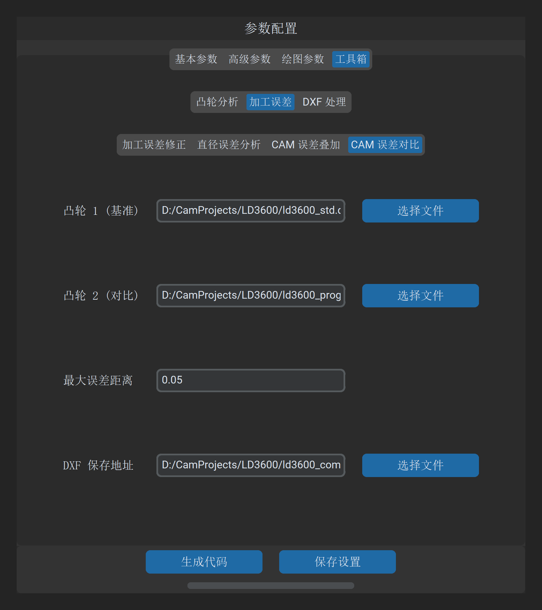

CAM 误差对比
“CAM 误差对比”工具用于在毫米乃至微米级精度下，对两个独立的闭合凸轮 DXF 轮廓进行空间几何对齐与高保真残差分析，自动生成残差波形与形位统计指标。
1. 操作界面与参数布局
打开主界面并切换至 工具 -> 加工误差 -> CAM 误差对比：

2. 参数定义与配置说明
| 参数项 | 字段标识 | 推荐设置 | 详细说明与工程含义 |
|---|---|---|---|
| 凸轮 1 (基准) | cam_1 |
必填 | 理论基准凸轮 DXF 文件路径（作为误差计算的零基准面） |
| 凸轮 2 (对比) | cam_2 |
必填 | 待对比的凸轮 DXF 文件路径（如修调后轮廓、三坐标拟合轮廓） |
| 最大误差阈值 | max_error_distance |
0.1 |
形位公差允许上限（）。系统将根据该阈值对超差点进行统计与预警过滤 |
3. 几何对比算法与判据
系统在基准凸轮曲线表面生成等弧长离散测点族，对对比凸轮执行高精度双向法向投影距离搜寻：
- 法向偏差投影：计算对比曲线上各采样点沿基准法向量的正负距离：
- 形位统计特征量输出：
- 最大正偏差（）：凸轮局部材料偏厚的极值点；
- 最大负偏差（）：凸轮局部欠料/过切的极值点；
- 全周极差（Peak-to-Valley, ）：；
- 均方根残差（Root Mean Square, ）：综合反映全轮廓贴合平滑度。
4. 输出成果与工程应用
点击 生成对比数据 后，系统在同目录输出误差对比分析图表及统计报告：
- 全转角残差波形（Plotly 交互视图）：清晰显示 范围内每处角度的偏差起伏，便于定位机床主轴反向间隙产生的特定角度相位误差；
- 一致性检验：用于多工位加工一致性对比、工装夹具重复定位精度标定以及算法平滑前后的形变保真度验证。